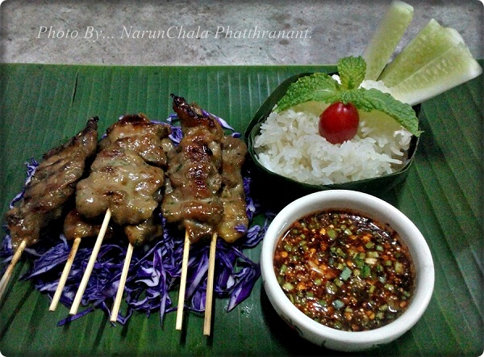

หมูย่างน้ำจิ้มแจ่ว

ส่วนผสมทำหมูย่าง
• เนื้อสะโพกหมู หรือสันนอก 1 กิโลกรัม
• รากผักชี 25 กรัม
• กระเทียมไทย (แกะเปลือก) 2 หัว
• พริกไทยเม็ด 1 ช้อนชา + 1/2 ช้อนชา
• น้ำตาลมะพร้าว 180 กรัม
• หัวกะทิ 1 ถ้วยตวง + 1/2 ถ้วยตวง
• ซีอิ๊วดำ 3 ช้อนชา
• ซีอิ๊วขาว 8 ช้อนโต๊ะ
• ซอสปรุงรสฝาเขียว 6 ช้อนโต๊ะ
• แป้งข้าวโพด 1 ช้อนโต๊ะ
• ไข่แดง 1 ฟอง
• น้ำมันพืช 5 ช้อนโต๊ะ
• ไม้สำหรับเสียบหมู
วิธีทำหมูย่าง
• แล่เนื้อหมูให้เป็นแผ่นหนาประมาณ 1/2 ซ.ม. ความกว้างประมาณ 4-5 ซ.ม. ส่วนความยาวนั้นขึ้นอยู่กับขนาดของไม้เสียบ (หรือหั่นตามความถนัด)
• โขลกรากผักชี กระเทียม และพริกไทยเม็ดจนละเอียดเข้าด้วยกัน
• ผสมเครื่องที่โขลกไว้กับน้ำตาลมะพร้าว กะทิ 1 ถ้วยตวง (ส่วนกะทิที่เหลืออีก 1/2 ถ้วยเก็บไว้ใช้ทาตอนย่าง) ซีอิ๊วดำ ซีอิ๊วขาว ซอสปรุงรส แป้งข้าวโพด และไข่แดง คนผสมจนน้ำตาลมะพร้าวละลายดี จึงนำเนื้อหมูที่หั่นไว้ลงไปเคล้าผสมให้เข้ากัน สุดท้ายใส่น้ำมันพืชลงไปเคล้าผสมให้เข้ากันอีกครั้ง หมักทิ้งไว้ในตู้เย็น 1 คืน หรืออย่างน้อย 3 ชั่วโมงขึ้นไป
• หลังจากหมักหมูทิ้งไว้ครบเวลาแล้ว นำเนื้อหมูออกจากตู้เย็นมาเสียบด้วยไม้
• นำน้ำที่เหลือจากหมักหมูไปผสมกับกะทิที่เหลือให้เข้ากัน เตรียมไว้
• หลังจากหมักหมูทิ้งไว้ครบเวลาแล้ว นำเนื้อหมูออกจากตู้เย็นมาเสียบด้วยไม้
• นำน้ำที่เหลือจากหมักหมูไปผสมกับกะทิที่เหลือให้เข้ากัน เตรียมไว้
ส่วนผสมน้ำจิ้มแจ่ว
• น้ำมะนาว
• น้ำตาลมะพร้าว
• น้ำปลา
• พริกป่น
• ข้าวคั่ว
• ต้นหอมซอย
• ผักชีฝรั่งซอย
วิธีทำน้ำจิ้มแจ่ว
• ผสมน้ำมะนาว น้ำตาลมะพร้าว และน้ำปลาให้เข้ากัน ชิมรสตามชอบ แล้วใส่ข้าวคั่ว พริกป่น ต้นหอมซอย และผักชีฝรั่งซอยลงไป
ขอขอบคุณรูปภาพและข้อมูลจาก : K@POOK COOKING (คลิกที่นี่)